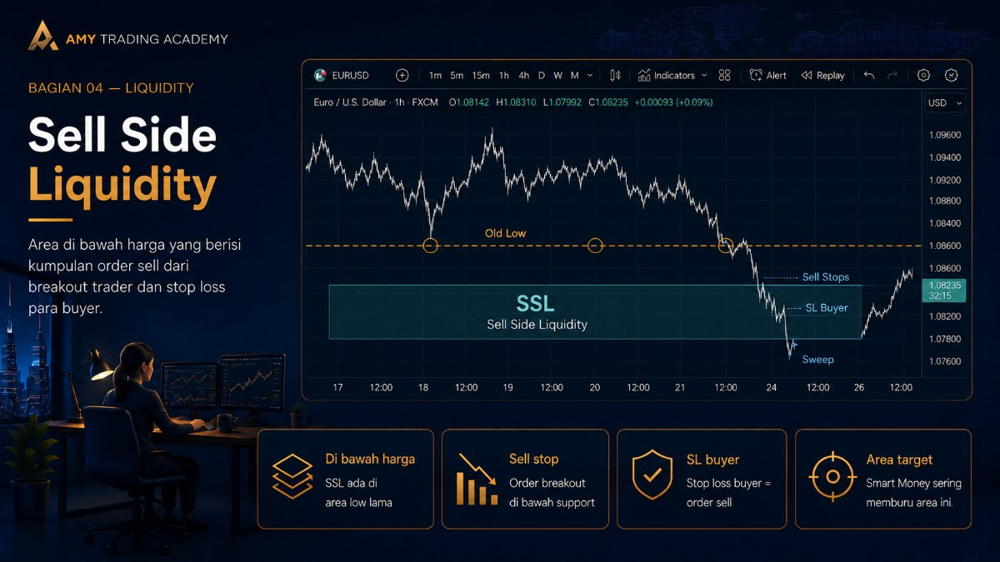
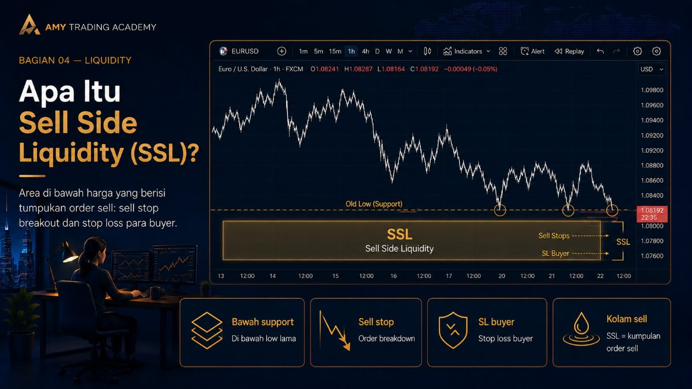
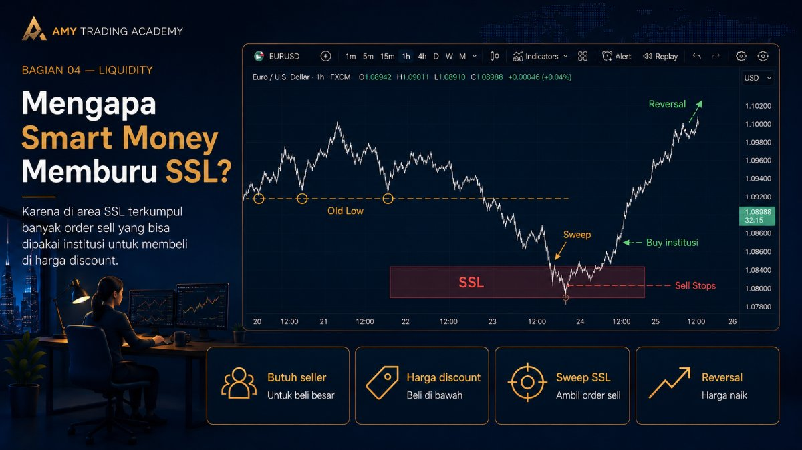
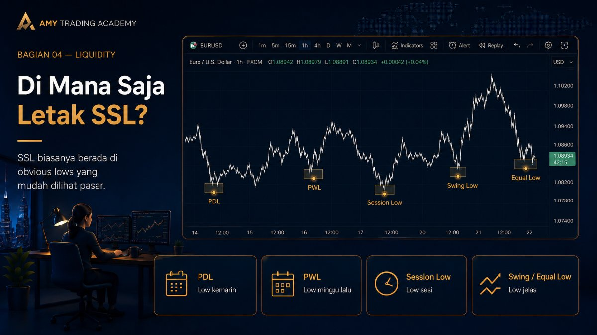
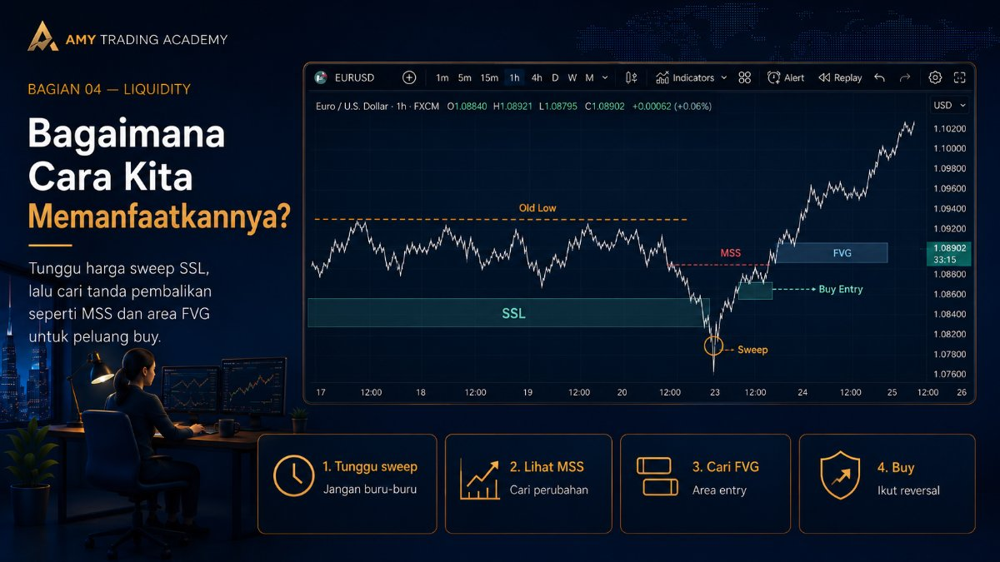

Sell Side Liquidity

Jika pada bab sebelumnya kita sudah membahas tentang Buy Side Liquidity (BSL) yang berada di atas level High, sekarang kita akan membahas kebalikannya, yaitu Sell Side Liquidity (SSL) yang letaknya berada di bawah level Low. Memahami kedua sisi likuiditas ini ibarat memahami dua sisi mata uang; kamu harus tahu kapan institusi butuh pembeli, dan kapan mereka butuh penjual.
Secara sederhana, jika institusi butuh orang untuk membeli barang mereka, mereka memburu BSL. Sebaliknya, jika mereka ingin memborong barang di harga murah, mereka akan memburu area SSL.
Apa Itu Sell Side Liquidity (SSL)?

Sell Side Liquidity adalah area di bawah harga saat ini (umumnya di bawah level Support atau Old Lows) di mana terdapat jumlah pesanan MENJUAL (SELL) yang sangat besar dan sedang tertunda (pending). Sama seperti BSL, kata "Sell Side" di sini bukan bermakna ini tempat yang disarankan untuk entry Sell, melainkan tempat berkumpulnya order Sell milik trader ritel.
Ada dua jenis trader ritel yang memberikan sumbangan order Sell secara besar-besaran di area ini:
- Trader yang Sedang Buy (Stop Loss): Ketika harga turun mendekati level Support yang kuat, buku-buku teknikal klasik mengajarkan kita untuk open posisi Buy. Trader yang melakukan Buy ini tentu tidak ingin rugi besar jika prediksinya salah, sehingga mereka meletakkan pelindung berupa Stop Loss (SL) tepat di bawah garis Support tersebut. Nah, perlu diingat, untuk menutup posisi Buy secara paksa, sistem harus melakukan eksekusi Sell. Artinya, Stop Loss milik jutaan buyer tersebut secara teknis adalah order Sell Stop.
- Trader Breakout (Support Breakers): Di kubu lain, ada trader yang tidak percaya Support akan bertahan. Mereka menunggu momen "Support Breakdown". Mereka memasang jebakan berupa pending order Sell Stop di bawah level Support, dengan harapan saat harga menembus Support, mereka otomatis ikut terjun dalam posisi Sell.
Kombinasi antara Stop Loss dari para pembeli dan order masuk dari para trader breakout inilah yang menciptakan kolam raksasa bernama Sell Side Liquidity.
Mengapa Smart Money Memburu SSL?

Mari kita pakai logika pedagang besar. Jika kamu punya modal miliaran dolar dan ingin membeli (Buy) sebuah aset karena kamu tahu harganya akan naik panjang (bullish trend), kamu butuh orang-orang yang mau menjual aset mereka kepadamu dalam jumlah yang sama besarnya, dan di harga yang semurah mungkin (discount).
Di mana kamu bisa menemukan jutaan orang yang bersedia menjual barangnya di harga murah secara bersamaan? Jawabannya: di area Sell Side Liquidity.
Maka, apa yang dilakukan oleh algoritma pasar (IPDA)? Algoritma akan menekan harga turun hingga menembus level Support atau Old Low. Tujuannya sangat jelas:
- Menyapu bersih Stop Loss para pembeli, membuat mereka terpaksa menjual posisi mereka dalam keadaan rugi (cut loss).
- Memasukkan trader breakout ke pasar dalam posisi Sell di harga paling bawah (pucuk bawah).
Saat trader ritel sedang panik menjual (karena kena SL) dan agresif menjual (karena ikut breakout), Smart Money hadir sebagai pembeli tunggal. Smart Money MEMBELI (Buy) semua order Sell tersebut secara massal. Akibatnya, setelah proses akumulasi di harga bawah ini selesai, harga akan berbalik arah dengan sangat cepat dan terbang ke atas, meninggalkan trader ritel yang kebingungan.
Di Mana Saja Letak SSL?

Sama halnya dengan BSL, area SSL dapat dilacak dengan mencari titik-titik terendah yang sangat jelas terlihat oleh semua orang di chart, contohnya:
- Previous Day Low (PDL): Harga terendah pada hari sebelumnya.
- Previous Week Low (PWL): Harga terendah minggu lalu.
- Session Lows: Titik terendah di sesi spesifik (Low of Asia, Low of London, dll).
- Swing Lows: Lembah-lembah harga yang membentuk struktur bawah (Lower Low atau Higher Low) di berbagai time frame.
- Equal Lows: Dua lembah sejajar (double bottom) yang akan kita bedah di bab selanjutnya.
Bagaimana Cara Kita Memanfaatkannya?

Pengetahuan tentang SSL mengubah caramu melihat Support. Dulu, penembusan Support berarti sinyal Sell yang kuat. Sekarang, dalam lensa SMC/ICT, penembusan Support adalah peringatan untuk bersiap mencari peluang Buy.
Langkah yang benar adalah: biarkan harga turun mengambil SSL. Jangan ikut panik, jangan ikut sell di ujung bawah. Pantau saja reaksinya di time frame kecil. Jika setelah harga turun ke bawah Old Low (menyapu SSL), harga langsung bereaksi kuat ke atas, mematahkan struktur ke atas (Market Structure Shift) dan menciptakan Fair Value Gap (FVG), maka itu adalah sidik jari bahwa Smart Money baru saja memborong order Buy. Di titik itulah kita bisa mencari peluang entry Buy (long), mengikuti pergerakan sebenarnya dari market.